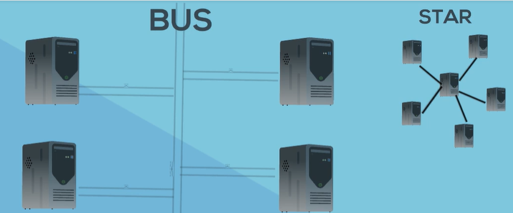

Technology para a rede local de dispositivos de radio sem fio baseada no IEEE 802.11
Wi-fi came from word "hi-fi" or High Fidelity relacionado a boa tecnologia de audio.
Ethernet:define como as informações digitais são passadas entre computadores em uma rede local.

Transmissão na LAN eram half-duplex, onde não permitia a transmissão de sinais simultaneas, porem era permitidos em duas direções. (esquema de Walk-talk)
AP: Access Point
- Anti-virus software
-Firewalls
- Security Intelligence

Protocolo de Segurança:
- Wi-fi Protected Access or WPA
- WPA2